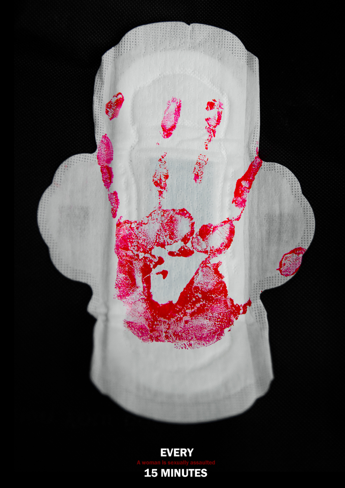
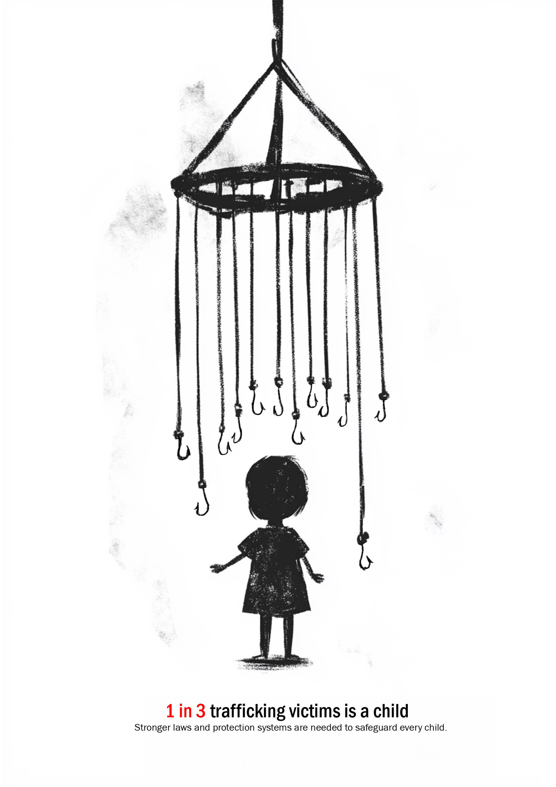
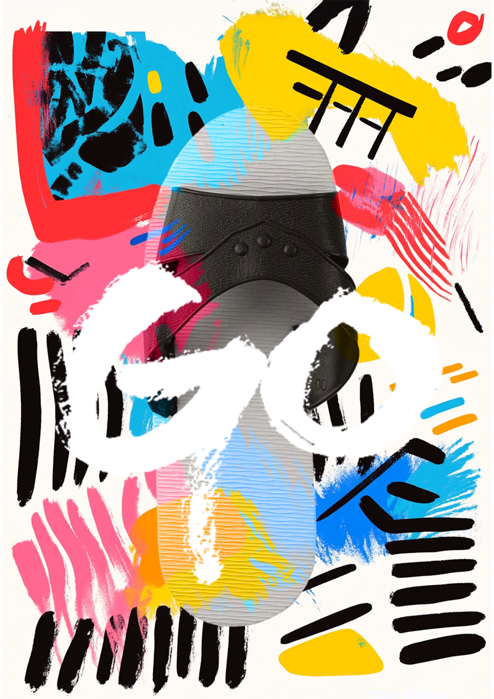
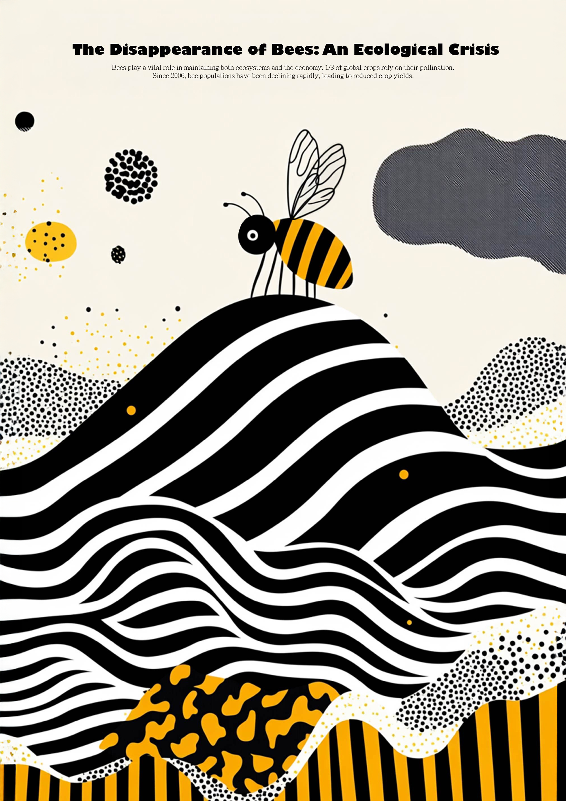
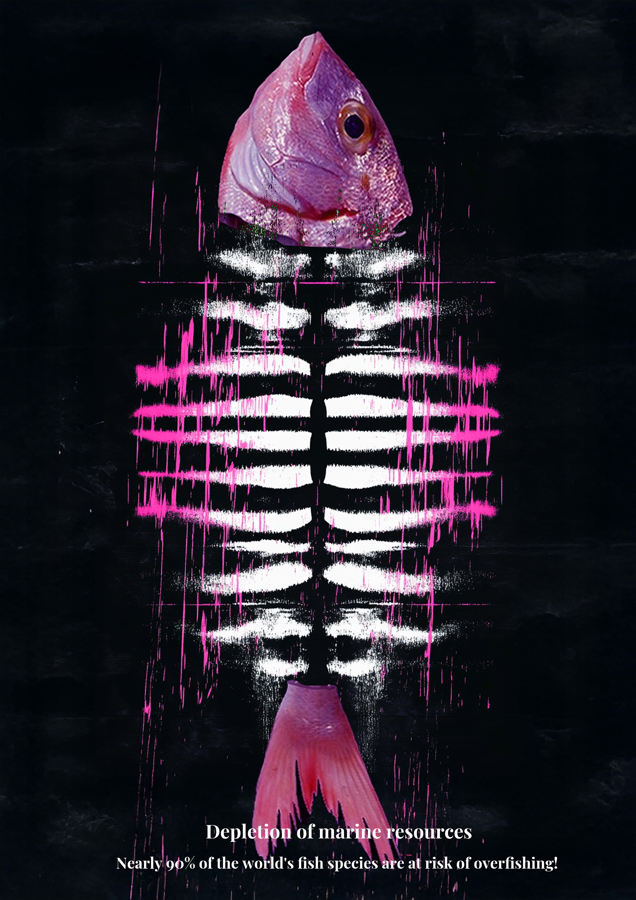

Visual Design Studies
收錄平面視覺與海報設計練習，包含議題轉譯、圖形構成、字體實驗與視覺風格探索。
Info
Type｜Poster / Visual Design
Category｜Graphic Design Studies
Year｜2024–2026
Format｜Digital Poster
Concept
本系列整理不同課程與參賽過程中的平面設計作品， 透過海報形式練習如何將主題、概念與情緒轉化為視覺畫面。
作品涵蓋社會議題、環境議題、圖像構成與字體設計， 嘗試以不同風格建立畫面張力與訊息傳達。
Posters

Lost
以抽象圖形與紅黑色彩構成畫面，呈現失落、漂浮與未知位置的狀態。

DON'T
作品探討女性在性暴力議題中的處境， 透過日常物件的轉換，呈現壓迫、傷害與被忽視的現實， 並讓觀者直面這種無法被輕易說出口的經驗。

兒童販賣
透過線性構圖與人物意象，表現兒童被商品化與受困的處境。

GO
以高彩度圖形與拼貼式構成，練習節奏感、畫面動勢與抽象視覺表現。

BEE
以蜜蜂與環境圖像為主題，將自然、生態與視覺節奏結合於海報設計中。

Overfishing
以魚骨與強烈色彩對比呈現過度捕撈議題，強化警示與衝突感。

齒
以「齒」為主題進行字體造形實驗，探索文字結構與圖像感之間的關係。